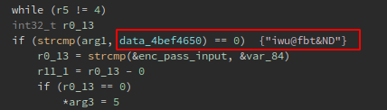

Reversing IOT: Part 1
Hello, it‚Äôs been a while since my last post, but I‚Äôm here now to show you some basic reverse engineering tips for some IOT devices, I mean with this post I‚Äôm starting a series of reverse engineering on IOT devices ü뮂Äçüíª.
Well I cant disclose now the device tested and the vendor, so let’s say we are testing some Industrial LTE 4G router.
First I’ve downloaded the firmware from the vendor web page, and extracted the filesystem using binwalk:
xpl0ited1@freedom?$ binwalk -e firmware.bin
Then I started to look for some common .cgi endpoints like web.cgi, this to check if there is some way to bypass the authentication schema. I noticed that every time the device checks if the user is logged in, it does it by using the ICOS_CheckPrivilege function:
Also I saw that the ICOS_CheckPrivilege function also is used to check the user privileges, I mean if the user is admin, guest, etc. That kind of check is made by passing the result of the ICOS_CheckPrivilege function to the address stored at var_1c, and then checking that address with the level2str function:
Inside the level2str function there is some kind of switch/case sentence that checks if the value stored at the address on var_1c is 1,2,3,4 or 5. By this way the function returns the user level:

With all that in mind my question was “how does the ICOS_CheckPrivilege function calculates sets the user level and why?”. Here is how the ICOS_CheckPrivilege function looks like:

When looking at the code of the function, I saw that the crypt function is used:
This function “is the password encryption function. It is based on the Data Encryption Standard algorithm with variations intended (among other things) to discourage use of hardware implementations of a key search.”, and there is a paramater that is used for salting the key:
So for now I have that the data_4bef464c data reference is the salt for arg2 or the password input:
When checking at the address of the data reference I‚Äôve got that the salt is just $1$ ü§¶:
With all that in mind I made a few changes to the code of the function, modifying some variable names:
By other hand, there is a string comparison before comparing the password. At this comparison some value at R4 register is compared with the arg1, so I could guess that is the username, right?:
While examining the whole comparison code block, I noticed that is inside a do/while loop that increments by 1 the value of the R5 register every time until is 4, this remind the switch/case sentence, btw if the register is 4 it skips to the next line that check if the username is the same at the data_4bef4650 data reference, which is iwu@fbt&ND:

This is how the level2str function looks like in Ghidra, as you can see if param1 (var_1c) is 4 it does nothing, and if it is 5 the user level returned is system:
So basically if the username is iwu@fbt&ND we are system:
But now what is the password for that user?, the password is stored at the var_84 pointer:
I renamed the var_84 variable to system_pass_addr, and if we look at the beggining of the function we could see the address were the password is stored in the stack:
So when looking at the stack we now have the address where the data reference of the system password is:
After cracking the password with hashcat I got the system user password:
Now, looking in Shodan for some exposed devices I could saw that there a few:
When browsing in some of the exposed devices I got this initial web page that shows me as guest:
Then I’ve logged in and had access to restricted functionalities:
And of course there is and RCE ü襂Äç‚ò†Ô∏è that I‚Äôve already reported to mitre, and the best of all is fully unauthenticated, I‚Äôve just found it by exploring as authenticated user the device portal, but it is also leaked in some JS files:
And that‚Äôs all folks, thanks for reading, and I will post a second part of the full RCE when the vendor release a patch. Cheers!!! ü¶ú
ü襂Äç‚ò†Ô∏è ü襂Äç‚ò†Ô∏è ü襂Äç‚ò†Ô∏è ü襂Äç‚ò†Ô∏è ü襂Äç‚ò†Ô∏è